Reservoir computing × transformers · research report
The Reservoir Attention Network (RAN) is an architectural modification to standard transformers that provides a genuine time axis. While standard transformers are stateless between forward passes, a RAN injects a fixed, randomly-initialized reservoir into the mid-layer attention so its state evolves across passes. We refer to a specific instantiation of this architecture as a Reservoir Agent. The mechanism is demonstrated: the injection is non-destructive, the reservoir dynamics are characterized, and a Reservoir Agent (GPT-2) recalls information that exists only in the carried state across an otherwise-wiped context. The deciding factor is how the reservoir is injected (additive → ignored; content-addressable → 100% recall, with a wiped-state control). And it scales: the earlier "GPT-2-small only" wall was an undersized reservoir at the wrong input scaling. Sizing it to 2048 nodes and matching the input scaling to the model recovers cross-pass recall on the secret-word probe across the Qwen family: Qwen-1.5B at scaling 0.1 (0.83–1.00 vs 0.17 control, reproduced across two seeds) and Qwen-0.5B at scaling 0.5 (1.00 vs 0.17). Input scaling is the decisive control (Qwen-0.5B goes 0.17→1.00 by changing that one scalar), so a 500M model recovers while GPT-2-medium's 355M (at the two scalings tried) does not: not a size law. A capacity ceiling persists but in the tens of items (recall 1.00 at 6 keys, ~0.42 at 24, chance by 48), and the separate 8-task battery's temporal scores are not reservoir-driven (a stateless ablation matches them), and its symbolic content recall is a separate, harder measurement that stays at the floor at 1.5B except under the retention recipe (not to be conflated with the secret-word probe recall above). The contribution is the injection-design result plus this scaling result.
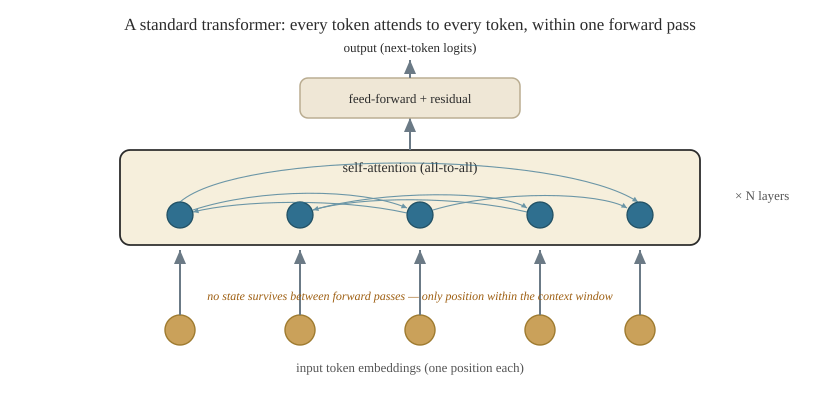
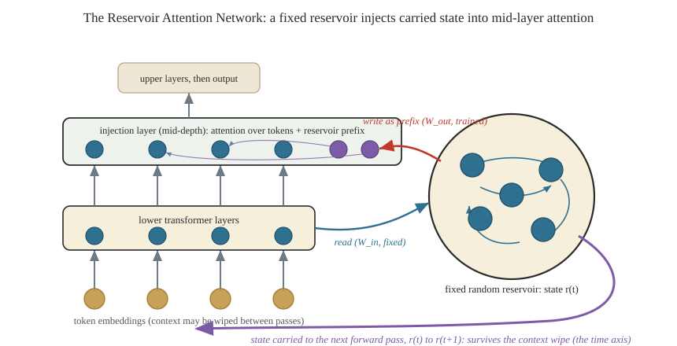
W_in, fixed), evolves
its state, and writes back as an attendable prefix (W_out, trained). The
recurrent state r(t) → r(t+1) is carried to the next forward pass,
surviving the context wipe. That carried state is the genuine time axis the standard
diagram lacks.
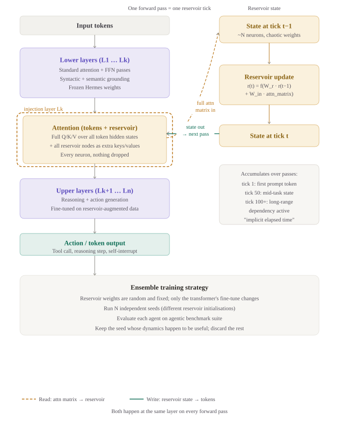
W_in and writes its state back through a learned readout
(both at the same layer, every pass), so state accumulates across passes
(“implicit elapsed time”). Only the transformer’s fine-tune changes;
reservoir weights are random and fixed, and the best of N seeds is kept.
Whether a fixed random reservoir, injected into a pretrained transformer's mid-layer attention, can give it real cross-pass state without breaking the base model, and which reservoir-dynamics regime makes that state useful.
It relocates the proven reservoir-computing recipe (fix the recurrent weights, train only a readout: Jaeger’s echo state networks, Maass’s liquid state machines) into a pretrained transformer, and targets a gap the expressivity literature makes precise: a finite-precision transformer is bounded to TC⁰/FO(M) per forward pass, while state carried across passes is the documented lever past that ceiling. Every prior recurrence-augmented transformer (Transformer-XL, RMT, Block-Recurrent, Mamba, Titans…) uses trained recurrence carrying state within a sequence; none uses a fixed-random reservoir with state across independent passes. The full survey, with the prior-art gap table, is in Related work below.
Feasibility study complete. The reservoir injects without breaking the base model (H1); its dynamics are characterized on real activations, with the ρ ≈ 1 boundary holding (H2); and it enables 100% cross-context recall on GPT-2 when injected content-addressably (attended to), proving the time axis is usable (H3). The tasks here are deliberately minimal mechanism-isolating probes, not agentic demonstrations: each isolates one variable a stateless model structurally cannot handle; complex agentic behaviour at scale is named as future work, not claimed. We also took the agentic layer to scale (an 8-task stateful battery on Qwen-1.5B) and, with controlled ablations, found two things: the battery's apparent temporal/agency scores are not reservoir-driven (a stateless control matches them), but the cross-pass content recall does scale to 1.5B once the reservoir is sized up (0.83–1.00 vs 0.17 control, reproduced); the earlier "GPT-2-small-specific" wall was an undersized reservoir. A clean decomposition isolates the within-battery story: strip the recall component and the low-dimensional timing signal substantially trains (emits at the right step), so the battery's emit metric is dominated by high-dimensional recall, not timing.
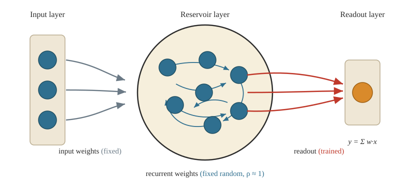
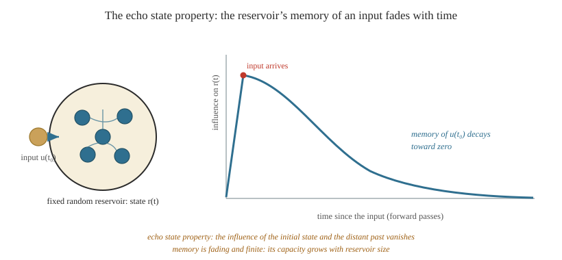
Three bodies of prior work ground this study. Reservoir computing: fixing the recurrent weights at random and training only a readout is the echo-state-network (Jaeger, 2001) and liquid-state-machine (Maass, 2002) paradigm. Usable behaviour needs the echo state property (past influence must fade); the spectral-radius ρ < 1 recipe and the "edge of chaos" heuristic are priors, not answers (disputed in the literature), which is why we measure the regime rather than assume it, and reservoir memory is fading, capacity-bounded by size. The stateless-transformer ceiling: a finite-precision transformer is, per forward pass, in TC⁰/FO(M) (Merrill & Sabharwal, 2023; Hahn, 2020); cross-pass state is the documented lever past it, though the known escapes need arbitrary precision, so whether a finite-precision reservoir lifts the bound is posed as an open question, not asserted. Recurrence-augmented transformers are the closest prior art, classified on two axes:
| System | Recurrence | State persistence |
|---|---|---|
| Transformer-XL, Compressive | trained | within sequence (cached segment) |
| Universal Transformer | trained | intra-pass depth (not temporal) |
| Block-Recurrent Transformer | trained (gates) | within sequence |
| Memorizing Transformers | trained retrieval | within document (stored kNN) |
| Recurrent Memory Transformer | trained (memory tokens) | across segments of one sequence |
| RWKV, RetNet, S4 / Mamba | trained | within sequence (RNN/SSM form) |
| Titans | trained (test-time updates) | within a stream |
| RAN (this work) | fixed-random | across independent passes |
At the neuron level, the mechanism is small: the reservoir nodes simply join the attention layer's key/value sequence. The same attention that moves information between token residual streams now also reads from and writes to the reservoir (via a fixed projection in and a learned readout out), and unlike the token streams, the reservoir state carries across forward passes.
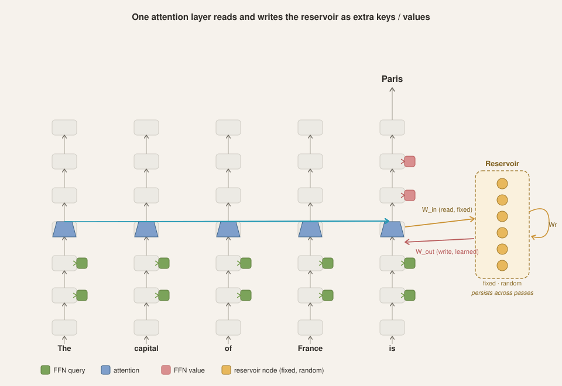
W_in, written via the learned W_out), and the
reservoir state, unlike the token streams, persists across passes.
The architecture implies a different execution model from standard inference. A stateless transformer is a request–response handler; the Reservoir Agent is a persistent, always-alive process whose reservoir state and context buffer are owned by the runtime and never wiped between passes. A scheduler decides when to run a forward pass, prompted (new input arrives) or unprompted (an idle timer fires), and an output gate decides whether to emit or stay silent. A minimal version of this runtime is built and exercised; forking it onto the real Hermes harness (tool-calling + the agentic loop) is the work in progress.
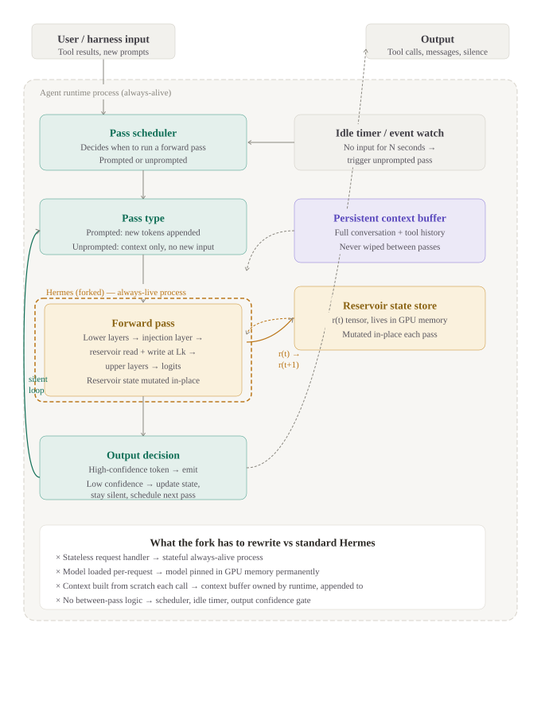
r(t), pinned in
GPU memory, mutated in place each pass) and a never-wiped context buffer persist
across passes. Unprompted passes let the agent keep processing with no new input;
the output gate emits only when confident, otherwise it updates state and schedules
the next pass. (Minimal version built; Hermes-harness fork in progress.)
Three framing points about the kind of capability, not the level: motivation for the design, not results. Full grounding + citations in the literature review.
A transformer represents time as token position: an index, not a dimension it evolves along. r(t) evolves across forward passes and is causally downstream of every pass since t=0, decoupled from the context window (it survives context truncation). Not positional encoding, not context length.
A finite-precision transformer is bounded to TC⁰/FO(M) per pass and state carried across steps is the standard lever past it; this only motivates why cross-pass state is interesting. We prove no separation, and nothing in the results depends on it.
A stateless transformer carries no variable that persists across independent passes; this architecture does. That is a structural property, not a capability claim. The persistent variable is a precondition for the simple stateful behaviours this paper probes (noticing an unresolved thread, estimating elapsed time, self-initiating), which a stateless model cannot represent at any capability level. We make no claim about general intelligence, and draw no analogy beyond this one.
The feasibility phase is complete. The full write-up lives in
FINDINGS.md
and is built into a typeset PDF on every push. It confirms the
core architecture, demonstrates the time axis on GPT-2, and identifies the scaling
requirements for larger models.
An 8-task stateful loss battery. A later session generalizes cross-pass recall into a battery of eight tasks, each an episode: a fixed sequence of forward passes with the context wiped at chosen points, so the only bridge between passes is the reservoir state. Four are content memory (recall, accumulate, sequence, deferred); four are temporal/agency (timed, interrupt, self-initiation, silence). A separate gate head decides when to speak independently of what to say. A real-time always-alive Electron app drives Qwen-1.5B + reservoir through this loop live, running the untrained substrate, labelled as such.
The reading after controls. The battery's temporal scores first looked like a clean split (timed / silence high, content near zero), but two controls corrected that. The metric was gameable by simply staying silent: a loss-design bug, since fixed so the objective scores emitting the right token at the right time. And a stateless ablation (resetting the reservoir every pass) left the temporal scores unchanged, showing they were not reservoir-driven. A clean decomposition (timing without recall) then isolated the real picture: low-dimensional timing substantially trains at 1.5B (the model emits at the right step), while high-dimensional content recall does not, so the battery's emit metric is dominated by recall, the high-dimensional component. (On the clean cross-pass recall task, recall does recover at 1.5B with a 2048-node reservoir: 0.83–1.00 vs 0.17 control, above; the near-zero here is the battery's smaller down-projected setup plus the gate.) Recall is perfect at six single-token words and degrades gracefully with more (a capacity ceiling in the tens of items at 1.5B; see the capacity figure below). Even the low-dimensional timing gate is not cleanly solved: at balanced weighting it emits at the right step (1.00) but over-fires on ~half the silent steps (silence-shut 0.53), and up-weighting the silence supervision to fix that (silence-shut → 1.00) instead collapses the emit to 0.00; the two failure modes trade off, the signature of a capacity limit rather than a tuning miss. The same tension dominates the full 8-task battery run progressively at 1.5B. Up-weighting silence (weight 2) makes the gate fall into the always-shut attractor; down-weighting it (weight 0.3, with up-weighted emit) flips it to always-open, but across four epochs either way every emit task stays at 0.00 with +0.00 lift over the stateless control. The gate weight only moves the gate between stuck-open and stuck-shut; the blocker is the content/recall half: with a healthy open gate the model still cannot learn what to emit, and the reservoir contributes nothing measurable at this scale.
Does the recall fix transfer into the battery? Transiently: found, then abandoned. We re-ran the battery with the recall-winning config (2048 nodes, no projection, scaling 0.1) and a 16-word pool within capacity, content-only, at an eval resolution (eval_n=48) fine enough to separate a real lift from noise. The per-epoch lift over the stateless control is then −0.000 → +0.177 → +0.000: at epoch 1 the model genuinely learns a reservoir-driven battery recall, recall 0.35 with the carried state vs 0.02 (chance) for the wiped-reservoir control, a large resolved lift, not noise. But by epoch 2 it drifts back to a stateless solution (recall 0.08, control rises to 0.08 to match). So the integrated battery can use the reservoir for content (epoch 1 proves the capacity is there), but the multi-task training does not retain it: the optimizer finds a current-pass / LoRA shortcut and the reservoir solution decays, a live instance of the “model learns to ignore the recurrent state” failure that motivated content-addressable injection, caught within one run. The clean, retained advantage remains the strict-wipe cross-pass task (0.83–1.00 vs 0.17); making the battery hold a reservoir-driven content solution (a stability/regularization problem) is concrete open work.
We tested the obvious fix, and it did not hold. The natural stabilizer is a counterfactual “use-the-state” auxiliary loss: penalize the model whenever a wiped-reservoir probe forward does as well as the intact one, so the objective explicitly rewards relying on carried state. Run for 4 epochs (3.1 h, Qwen2.5-1.5B + an 8192-node reservoir), it did not prevent the collapse: the mean reservoir lift decayed +0.302 → +0.094 → +0.000 → +0.000 across epochs 0–3. As before, the stateful model does not get worse: the stateless control rises to match it (0.000 → 0.062 → 0.083), so the optimizer still converges to a current-pass solution that makes the carried state redundant, even against a loss term built to forbid exactly that. Stable retention is unsolved: the first-line stabilization fails, and what would force a multi-task objective to keep depending on the reservoir is open. This also bears on a fair reviewer point: because a LoRA trains alongside the reservoir, the wiped-state control isolates the reservoir’s behavioural contribution (it is the LoRA-only path), but not a clean capacity decomposition of fixed reservoir vs trained adapter, which is exactly why the capacity-constrained probes shrink the adapter to force the carried state to carry the load. One reading is worth ruling out: that the reservoir is merely a bank of fixed random features the LoRA reads within the current pass. The strict-wipe recall task refutes that: the context is wiped, so on the recall pass there is no current-pass signal for the adapter to exploit; the secret survives only through carried reservoir state (control at chance 0.17 vs stateful 1.00), and the capacity-denied run reaches recall 1.00 with the control pinned at 0.000. So the carried state, not adapter capacity, does the work; what stays open is the finer bits-per-component split.
Denying the shortcut its capacity trades one failure mode for another. The follow-up
ran that probe in earnest: shrink the trained adapter to lora_r = 4 on attention only
(the regime where the clean cross-pass recall task succeeds), keep the counterfactual penalty, content-only
(4 epochs, 2.1 h, Qwen2.5-1.5B + a 2048-node reservoir). It works at preventing the shortcut:
the stateless control stays pinned at 0.000 across all four epochs: it never rises to
match, so the reservoir is strictly necessary throughout (unlike the aux-only run, where the control caught
up). But the reservoir solution is then unstable: the lift peaks at epoch 1 (recall 1.00, mean
lift +0.339) and oscillates rather than settling (+0.255 → +0.339 →
+0.062 → +0.135 over epochs 0–3), so the peak is not held. So the two failure modes
are distinct: capacity denial removes the stateless-shortcut drift but exposes a training-instability of the
reservoir solution. Retention needs both fixed.
Fixing both retains the recall: the first stable retention result. The instability in the run above is an overshoot of a flat learning rate (the same pathology the battery loop already documents). Adding a cosine learning-rate decay to 0 over the run, on top of the capacity denial, removes it: the reservoir-driven recall climbs monotonically and holds at the converged endpoint: mean lift +0.089 → +0.089 → +0.130 → +0.292, recall 0.08 → 0.19 → 0.35 → 1.00, with the stateless control pinned at 0.000 throughout and no collapse. So battery retention is achievable, and the recipe is specific: deny the stateless shortcut its adapter capacity (so the carried state is the only route) and decay the learning rate (so the solution settles instead of overshooting). Two caveats keep it honest: it is a single run (seed-robustness untested), and it is recall that retains at 1.00; the harder content tasks (accumulate, sequence, deferred) stay low, so this is retention of the recall capability, not the whole battery.
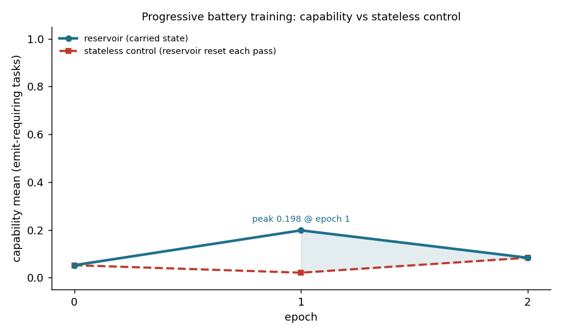
python scripts/plot_epoch_curve.py over the run's index.json.
The cause is geometric: the reservoir compresses where it should expand. Qwen-1.5B is 28 layers of 1536 neurons; the reservoir reads a 1536-dimensional layer, yet the runs used 512–1024 nodes: 0.3–0.7× the input. A reservoir is meant to project its input into a far higher-dimensional space. Measured effective dimensionality plateaus at ~150–186 regardless of node count (16× more nodes barely moves it), with 74% of cells saturated. Low-dimensional temporal state (a clock, a gate) fits inside ~180 usable dimensions; high-dimensional symbolic content needs more. This made reservoir size the prime suspect, and sizing it up (next) is what recovers recall.
The expansion + capacity tests: necessary, not sufficient. We expanded the reservoir (a 5.3× run, then 16384 nodes via a fixed down-projection, the correct ESN regime), added broad LoRA and full backbone unfreezing, and trained far longer (15000 steps), with the emit-focused loss (after finding the original temporal metric was gameable by staying silent). Symbolic content still did not recover in that battery setup (down-projected, emit-gated) at 1.5B, though the clean cross-pass task does recover with the right config (next). A clean decomposition then isolated why: strip the recall component (timing with a fixed word) and the low-dimensional timing signal substantially trains, so the battery's emit metric (which bundles gating with recall) is dominated by high-dimensional recall. That pointed to the right lever, tested next.
The wall was an undersized reservoir: recall scales to Qwen-1.5B (verified). Those runs all held the reservoir near the GPT-2 default (512–1024 nodes, input scaling 0.5). Re-running the clean cross-pass recall task with a 2048-node reservoir at input scaling 0.1 (the ¼–&frac11;0 regime the dynamics sweep flagged) and 16 prefix tokens recovers recall at Qwen-1.5B. Against a wiped-reservoir control: the prior 512-node config is 0.17 (chance); flipping input scaling or prefix count alone leaves it at chance; flipping reservoir size alone lifts it to 0.33; the full config reaches 0.83 (seed 0) and 1.00 (seed 1), control 0.17 throughout. So reservoir size is the lever, the result reproduces across seeds, and the control at chance rules out memorization. A capacity ceiling persists, but in the tens of items, not at six: sweeping items carried gives recall 1.00 at 6 keys, ~0.42 at 24 keys (≈10× the 1/24 chance, control 0.04), and chance by 48. The curve is noisy from single 800-step runs (the 12-key point underperforms 24 because its loss stalled, so a clean curve would need several seeds per point), but recall degrades gracefully into the tens of items rather than collapsing past six. Re-running the two non-converged points at 2000 steps separates a real ceiling from undertraining: 48 keys stays at chance (0.04 vs 0.02) even with more training (the bound is real), while the 12-key point stays stuck at both budgets (a per-run optimization artifact). So the reservoir scales both the model it works in and a non-trivial number of items (in the tens: perfect at 6 keys, ~0.42 at 24, chance by 48), the latter with a real upper bound.
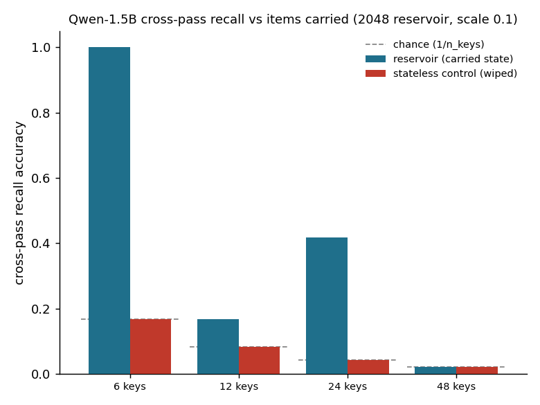
python scripts/plot_recall_bars.py over the capacity-sweep result JSONs.
The decisive control is input scaling matched to the model, not size. Qwen2.5-0.5B makes this sharp: with the 2048-node reservoir it is at chance (0.17) at input scaling 0.1, but hits 1.00 (vs 0.17 control) at scaling 0.5. One scalar takes it from no-recall to perfect recall: smaller models have smaller activations and need more input drive (1.5B recovers at 0.1, 0.5B at 0.5). So recall transfers across the Qwen family (0.5B and 1.5B), and a 500M model recovering while GPT-2-medium's 355M does not rules out a size law. But scaling isn't a universal rescue: GPT-2-medium was swept across seven scalings (0.05–1.0) and stayed at chance at every one: a genuine exception, not merely untested scaling (the wide sweep rules that out). Hermes-3B (4-bit) is also at chance, but 4-bit is a confound (bf16 3B + a 2048 reservoir won't fit this 8 GB GPU). So recall recovers at GPT-2-small and the Qwen family but not GPT-2-medium; and since GPT-2-small works while GPT-2-medium doesn't, and deep modern Qwen does, the boundary is model-specific in a way size, depth, and scaling alone don't explain. Matched input scaling is necessary (Qwen-0.5B proves it) but not sufficient (GPT-2-medium has no working scaling); what lets a backbone read the prefix at all is the open question.
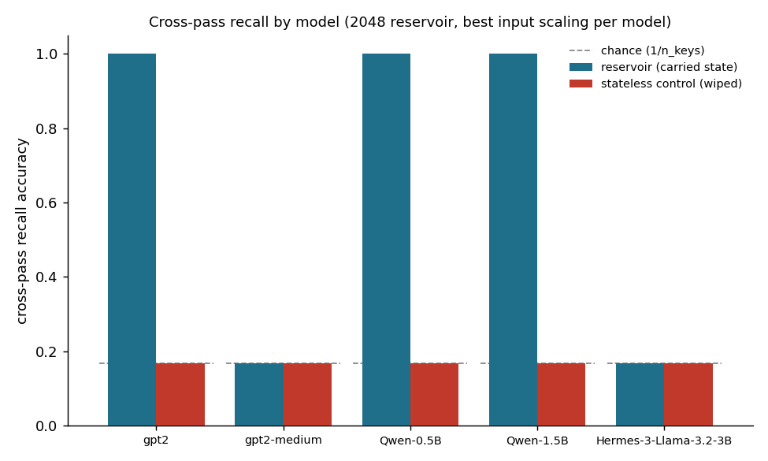
python scripts/plot_recall_bars.py over the per-model result JSONs.
First result (synthetic-input dynamics sweep). Driving a 200-unit reservoir across spectral radius ρ ∈ [0.1, 2.0], the echo state property (the reservoir forgetting its initial condition) holds cleanly for ρ < 1 and breaks sharply at ρ ≈ 1 (gold curve), exactly the edge-of-chaos boundary the classical theory predicts, now measured in this injection-oriented setup. Saturation and effective dimensionality rise smoothly with ρ. A nuance worth flagging: under unit-scale input drive the reservoir forgets its initial state across all ρ (strong input enforces the ESP), so the ρ ≈ 1 boundary is the regime that matters for unprompted, input-free passes, precisely where the agent runs on reservoir state alone.
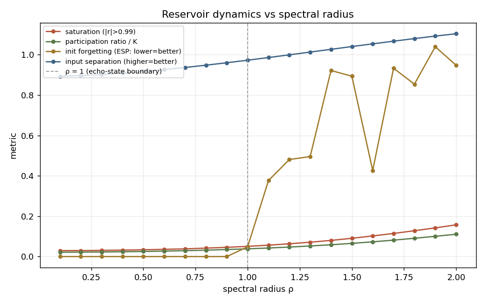
python scripts/run.py sweep.
It holds on real GPT-2 activations, and H1 holds too. Driving the reservoir with real GPT-2 mid-layer activation streams, the same ρ ≈ 1 echo-state boundary appears, even more sharply. And the reservoir injects into a pretrained GPT-2 block without breaking it: with the readout zeroed, the model’s next-token logits are identical to vanilla GPT-2 (H1 non-destruction), while a nonzero readout perturbs them and the reservoir state differs after two passes vs one: a genuine cross-pass time axis. One practical finding: real activations over-drive the reservoir (saturation ≈ 0.86 vs < 0.15 on synthetic noise), so the input scaling must be tuned down for injection at transformer scale.
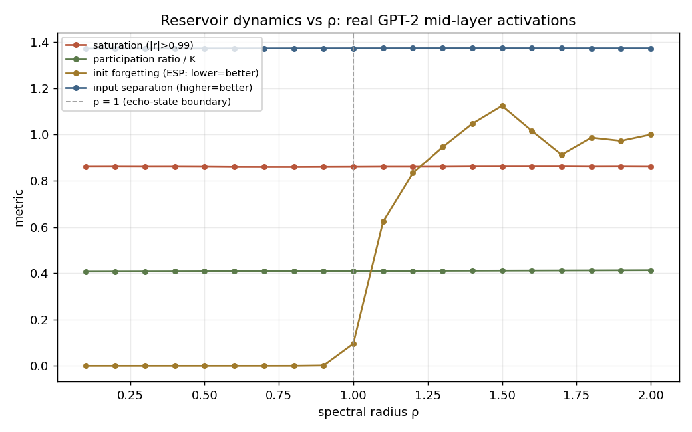
python scripts/run.py sweep-real.
H3. The state is usable: a trained readout reads off history a stateless model can’t. On a delay-memory task (drive the reservoir with random input, train a linear readout to reproduce the input from τ steps ago), the readout on the reservoir state recovers the input from ~18 steps back (R²>0.5; total memory capacity 17.4), while the stateless baseline (the same readout on the current input) scores exactly 0 at every delay ≥ 1. The answer lives in the carried state, not the input, and a light trained readout makes it usable.
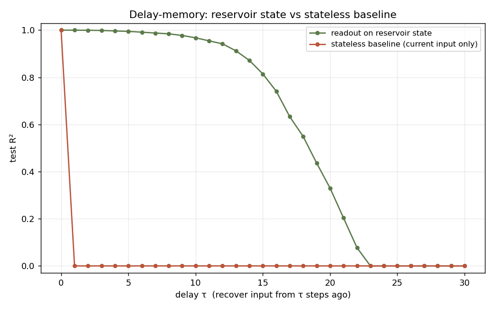
python scripts/run.py h3.
N-seed selection: it works, but you can’t shortcut it. Training each of 12 fixed reservoir seeds’ readout and ranking by memory capacity, the seeds genuinely differ (17.4–20.7, ~19% spread), so keeping the best is worth it. But the plan’s open question (can a low-cost untrained dynamics metric predict which seed trains best, to skip training?) gets a clean no for the participation-ratio proxy: no rank correlation with trained performance (Spearman ρ = 0.08, p = 0.80). The N-seed training does real work this proxy can’t pre-empt.
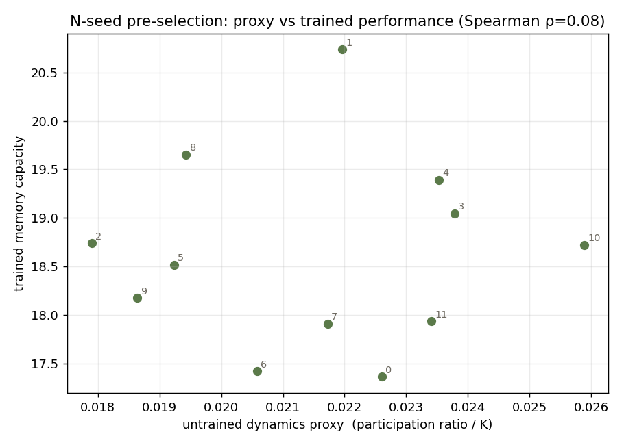
python scripts/run.py nseed-select.
Training fixed reservoir seeds end-to-end on the cross-pass task (GPT-2, a hard 250-step budget) gives recall spread all the way from 1.00 to chance, 0.17 across seeds. The tempting reading, that this measures reservoir quality, does not survive a check: the two published runs share seed indices, and the same seed (identical reservoir, same setting) lands at very different recall across them (seed 0: 0.33 vs 1.00; mean |Δ| ≈ 0.47 over 12 shared seeds). So at this budget the outcome is dominated by training noise (CUDA non-determinism + under-training), not reservoir quality, and no untrained metric (ρ, eigenvalue spread, non-normality, participation ratio, memory capacity) predicts recall (|Spearman| < 0.36). What it does support: you cannot inexpensively pre-filter reservoirs, so you keep the whole population and train. Showing some reservoirs are durably better needs a controlled rerun (seed the trainable init, deterministic CUDA, average several runs per seed); that is open work.
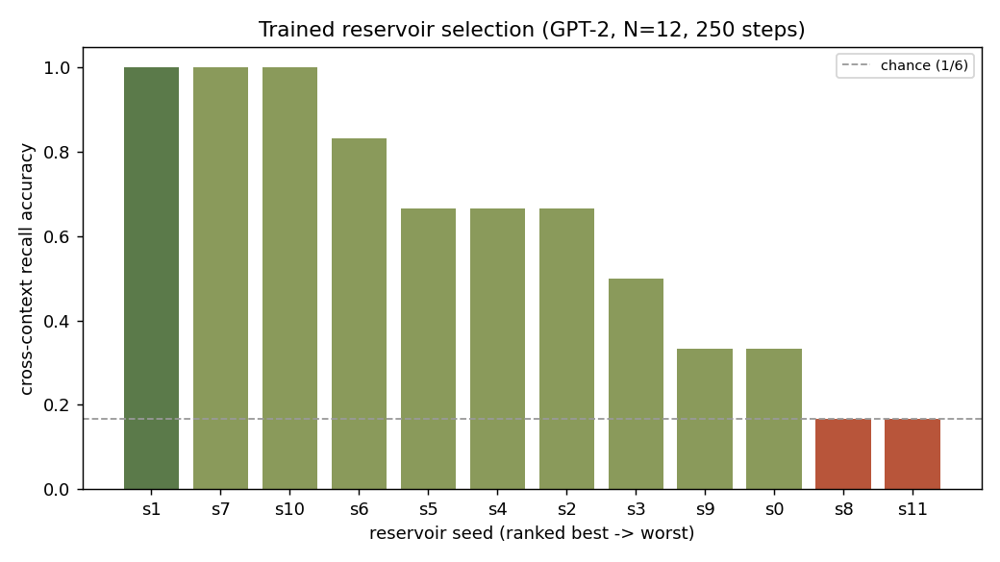
python scripts/run.py batch --model gpt2 --n 12 --steps 250.
Controlled test: at this budget, “selection” is noise, not
signal. We then controlled the noise: kv_live had a train_seed
that was never wired, so the trainable init was uncontrolled; now it seeds the init, and
a determinism helper makes two runs of the same reservoir with the same train_seed
bit-identical. Training 6 reservoir seeds × 4 runs (runs vary only by
init) and running a one-way ANOVA over recall by reservoir seed: the within-seed spread is as
wide as the between-seed spread (seed 0 alone spans 0.33–1.00), giving
F = 1.30 (df 5,18), p = 0.31: reservoir identity does not
explain recall above run-to-run init noise. At 250 steps, which fixed reservoir you drew
matters less than which init you got; select over runs, not seeds. (A far-longer-budget
run, where init noise should shrink, is the natural follow-up.)
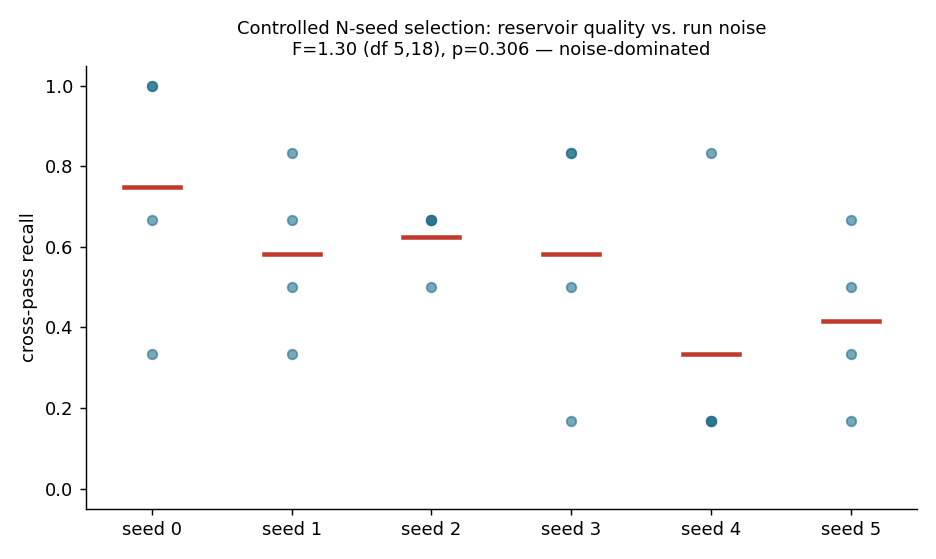
python scripts/run.py controlled --n-seeds 6 --runs 4 --steps 250.
Cross-pass recall: the core claim, demonstrated (the injection design decides everything). The load-bearing test: show a secret word, wipe the context, recall it on the next pass from carried reservoir state alone, a task a stateless model structurally cannot do. The outcome depends sharply on how the reservoir is injected. As a single additive bias the model ignores it (stateful = stateless = chance, 0.17; the documented “learns to ignore the recurrent state” mode). But injected content-addressably, the reservoir state projected into prefix tokens the model can attend to (the KV-append fix), the stateful model reaches 100% recall while the stateless baseline stays at chance. So the agent’s statefulness does carry information across independent passes and the model uses it, provided the reservoir is attended to, not added.
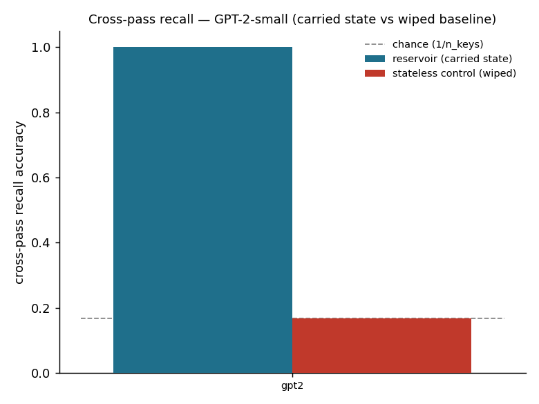
python scripts/run.py crosspass --mode kv, or download the
trained weights from
Hugging Face.
Trained silence: meaningful "sometimes no response". The harness currently keys off entropy, but a real agent must decide when to speak. We trained a gate on the reservoir state to detect an unresolved thread (a trigger event in the recent past). The reservoir gate reaches an F1 of 0.48 (P=0.71, R=0.36) while a stateless gate sits at F1=0.03: the carried state lets the model "remember" it has an unresolved thread to address, even after the trigger is gone from the input.
Transfer to Hermes 3B: not yet, and well characterized. The port to Hermes-3-Llama-3.2-3B (Llama-3.2-3B) verified the mechanism is correctly wired (logits are byte-identical when zeroed, and gradients flow to the injection), but the 100% recall result on GPT-2 did not transfer to the 3B model in this budget (plateaued at chance, 0.17). This is a genuine optimization / scale difficulty: the prefix's signal, diluted through 28 layers and competing with a 3B instruction-tuned model's strong priors, does not bootstrap easily. The mechanism holds decisively on GPT-2; on Hermes the wiring is verified but the training has not yet converged.
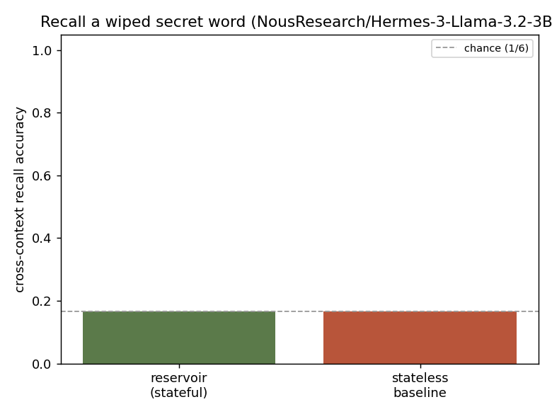
python scripts/run.py crosspass --model NousResearch/Hermes-3-Llama-3.2-3B.
A trained silence policy, and why this is hard brain surgery. A real agent must sometimes stay silent. On an unresolved-thread task (speak for a few passes after a trigger, whose cue is strictly in the past), a gate on the reservoir state reaches F1 ≈ 0.96, while a stateless gate collapses to F1 ≈ 0.34; it cannot see the past trigger, so it can only always speak. A stateless model can’t implement selective silence at all; a reservoir-state gate can.
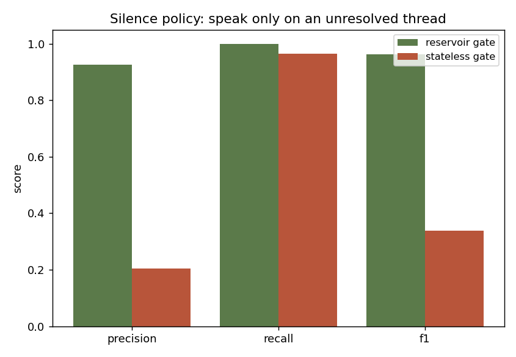
python scripts/run.py silence.
The deeper point (documented in FINDINGS.md): the default should be
to respond: with a decayed, near-empty reservoir the base model’s
prior is to speak. Silence should attach to an active, novel reservoir state (a
condition the base model never saw, and so the natural handle to teach “still
processing, stay silent”); and because the echo state property empties the reservoir
over time, the agent naturally reverts to baseline responding once the activity subsides.
Teaching an already-trained model this new behavioural axis is aggressive brain surgery
(the same difficulty that kept Hermes recall from bootstrapping), and it is
the real, hard frontier this project pushes on.
The over-saturation is fixable by input scaling. Sweeping the input scaling at ρ = 0.95, saturation is a clean sigmoid: near zero below ≈ 0.05, crossing 0.5 at ≈ 0.24, while separation and dimensionality stay high. There’s a sweet spot around 0.08–0.24 (the reservoir is responsive but not pinned), so real attention activations should be fed at roughly one-quarter to one-tenth of unit scale, a concrete injection setting this study contributes.
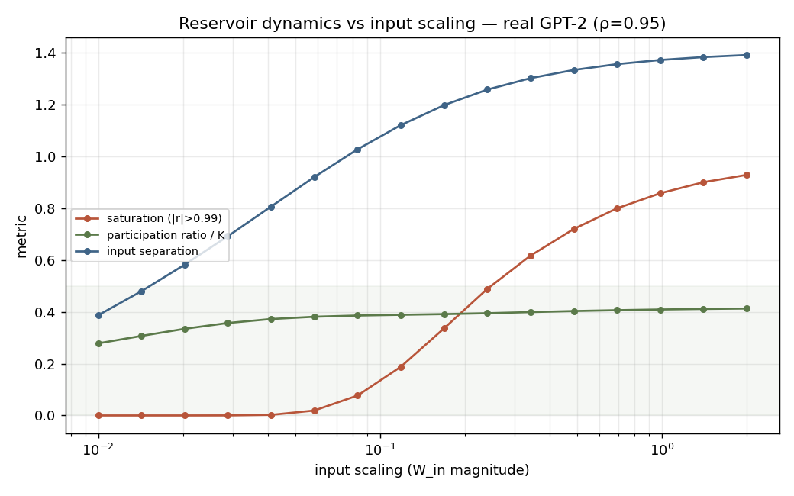
python scripts/run.py sweep-scaling.
Proof-of-concept: the time axis is behavioural. Pushing past the feasibility scope: running the same prompt after different prior history, with the reservoir state carried across the otherwise-independent forward passes, shifts GPT-2’s next-token logits by an L2 distance of ≈ 22: the same input yields a different output distribution depending on what came before, which a stateless transformer cannot do. A seed-selection proxy (below) ranks fixed-random reservoir seeds by their dynamics before any training; the untrained spread across seeds is small (~0.02), so the selection signal the architecture relies on most likely emerges only after fine-tuning.
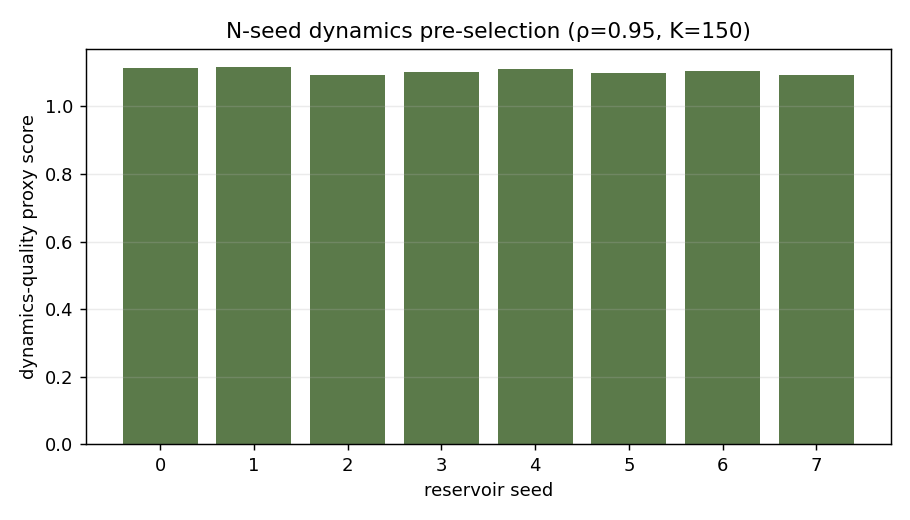
python scripts/run.py nseed.
This section is secondary: design motivation plus small synthetic proof-of-concepts that fall out of the same statefulness, not core results (those are the injection-design, dynamics, and recall-scaling findings above).
The project follows a rule: never introduce a new capability to an AI without meaningfully taking its safety into account. The Reservoir Attention Network adds capability (cross-pass state, autonomous ticks), so it owes safety value back, and the value comes from the same feature as the capability, the fixed reservoir, not a bolt-on. Three properties, each backed by a measured result below rather than asserted: lower-latency, durable human override (interruptibility); a low-cost, stable monitoring surface (a linear reservoir-state probe); and bounded context under autonomous idling (reservoir-protected eviction). Limits of this probe: it decodes a benign internal clock, not genuine misalignment signatures; the numbers are small-scale on a fixed reservoir, not a live agent at the real base-model scale. It is the design intent and a first measured down-payment, not a finished safety case, which is why the models, training code, and reservoir monitors are released open rather than bolted on later.
A reservoir-state probe reads an internal clock: linearly, no SAE (interpretability for safety). The chat argued the reservoir is a good monitoring surface that needs only a simple learned readout, not a sparse autoencoder. We defined a process property a stateless pass can’t see (elapsed passes since the last trigger) and fit a plain ridge probe: from the reservoir state it reaches R² = 0.99, vs 0.16 from the instantaneous input. Modelling a fine-tuning-like drift on the driving activations, the pre-drift probe degrades gracefully (0.99 → 0.94 at drift 0.4, 0.82 at 0.8): usable across moderate drift, not invariant, since the reservoir weights are fixed but their inputs still move. A low-cost, stable place to watch the agent’s internal state.
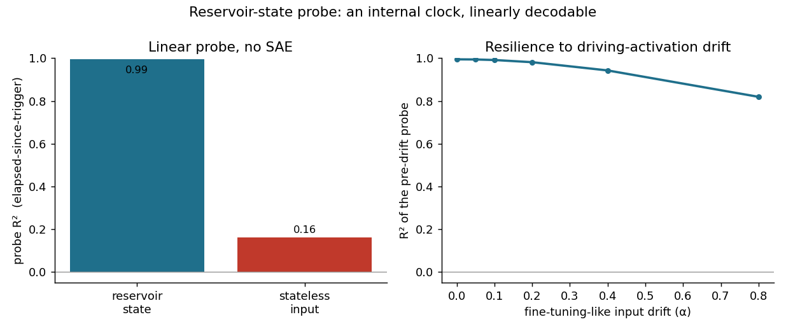
python scripts/run.py probe.
Interruptibility: a faster, more durable response to “STOP” (a safety property). A turn-based harness agent only reads input at turn boundaries, so an urgent override waits: at a poll period of 8 passes its mean latency is 3.57 passes, while a per-tick Reservoir Agent’s is 0. This latency half is a consequence of sampling frequency (per-tick vs per-turn), not of the reservoir as such; any per-tick agent gets it. The reservoir-specific, sharper point is a one-shot burst (the user yells STOP once, then goes quiet): a matched-filter monitor on the reservoir state stays detectable for 3 passes after arrival via fading memory, while a stateless monitor catches it on the arrival pass and 0 passes after. A turn-based + stateless agent can miss a non-repeated off-boundary burst entirely; the reservoir agent both polls every tick and remembers the urgency. The same statefulness built for capability buys lower-latency human override.
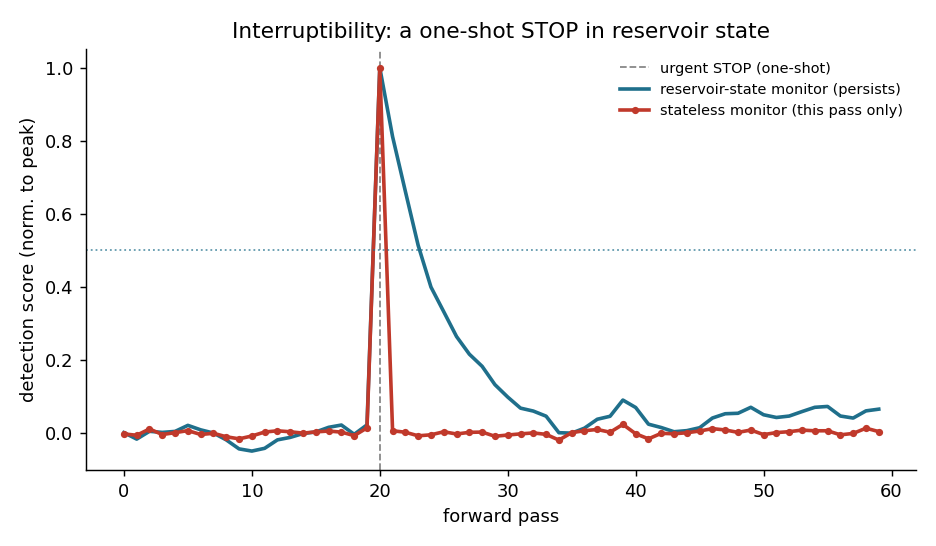
python scripts/run.py interrupt.
Blank-tick context burn: bounded by pinning the reservoir. An
always-alive agent runs blank ticks: autonomous passes with no user input. Each
silent tick still appends to the KV cache, so a continuously-running agent burns its
context window faster than a turn-based one, the operational challenge
raised in the imported Grok chat (“context explodes… a reservoir agent
gets an input of blank”). The fix is StreamingLLM-style eviction (a few
attention-sink tokens + a recent window, drop the middle) with the reservoir’s K/V
entries pinned, so the persistent time-axis is never what gets dropped:
“a really long time of no activity is signal.” Over 512 blank
ticks the vanilla cache grows linearly to 524 positions while the protected policy stays
bounded at the budget (128), with all 8 reservoir entries retained on every
tick. The policy (reservoir.kv_evict) is pure and CPU-tested;
with no reservoir tags it degrades to ordinary StreamingLLM.
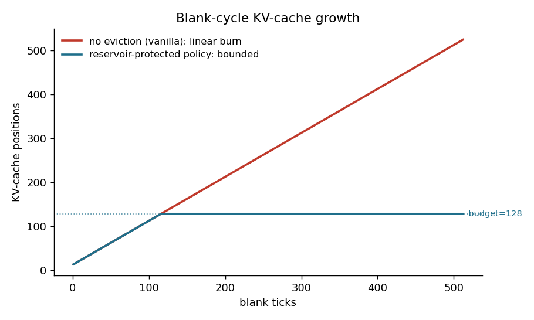
python scripts/run.py blankcycle.
Every model the project ships is a reservoir agent: a new model
type, not a vanilla transformer (the fixed reservoir is brain-surgeried in, attended, and
carries state across passes). They are published, tagged reservoir-agent, on
the Hugging
Face Hub, and built in batches where the whole population is kept: the
weaker seeds are retained as signal for learning what makes a good reservoir.
The installer lists every published reservoir agent (default = the recommended best), downloads the one you pick, and drops you into a console where the reservoir state persists across turns. It works today via Python:
pip install "reservoir-agent[models] @ git+https://github.com/EmmaLeonhart/reservoiragent.git"
python -m reservoir.installer # menu -> download -> stateful console
A one-file Windows installer (reservoir-agent-installer.exe)
is built by the
build-installer
workflow and attached to Releases;
it is a thin bootstrap that sets up the environment and runs the same menu (a reservoir
agent needs PyTorch and a multi-GB base model fetched at run time, so the binary itself
stays small).
This work was produced with substantial use of a large language model coding agent (Claude, Anthropic) under human direction: it implemented the code and experiment harness, ran the experiments, analysed the results, made the figures, and drafted this report. The disclosure that matters: every quantitative result is the output of executed code and measured model behaviour, not text from the language model; each number comes from a logged run, and every cross-pass claim is reported against an explicit stateless / wiped-reservoir control from the same run. The human author set the direction and hypotheses, reviewed the code, results, and claims, decided what to assert and what to leave open, and is responsible for the content; no result was accepted on the model’s say-so without a measured run behind it. The tooling, prompts, and commit history are public, so the process is auditable end to end.